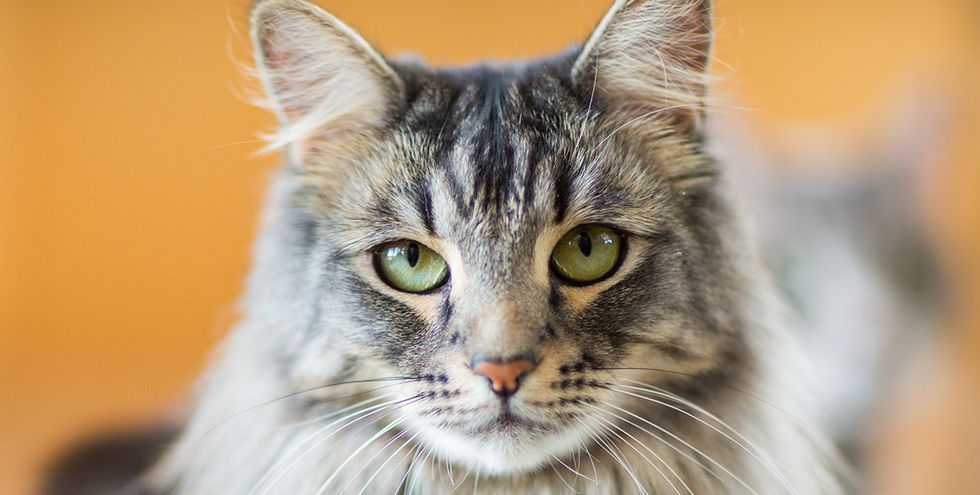

10 Large Cat Breeds That Would Be the Purr-fect Addition to Your Home

Many large cat breeds are cuddly companions for every member of the family. Depending on your lifestyle and preferences, you could want a cat to sit back and relax with, or one that can keep up with you on any adventure. Before we get to the 10 largest cat breeds, we had a few questions for Sarah Hodgson, a dog and cat trainer and the pet behavior specialist behind SarahSaysPets.com.
How will I know when my cat is fully-grown?
Wait until his or her first birthday. Hodgson says your cat will reach its full size after nine to 12 months.
Do bigger cats also have larger paws?
Not necessarily. According to Hodgson, the size of a kitten's paws do not determine how big they'll be later in life. However, long-haired cats might appear to have bigger paws because of all the fur on them. Here are some pics.
<Maine Coon>
Weight: < 35 pounds
Nicknamed "the dogs of the cat world", they're both family friendly and extremely intelligent and interactive, says Hodgson. But while they're fun for the whole family, there are some health concerns. These include a higher risk for polycystic kidney disease, hip dysplasia, and hypertrophic cardiomyopathy.